"生态文明与环境保护"
地球不仅仅是人类的家园，更是所有生物的家园。
全球性环境
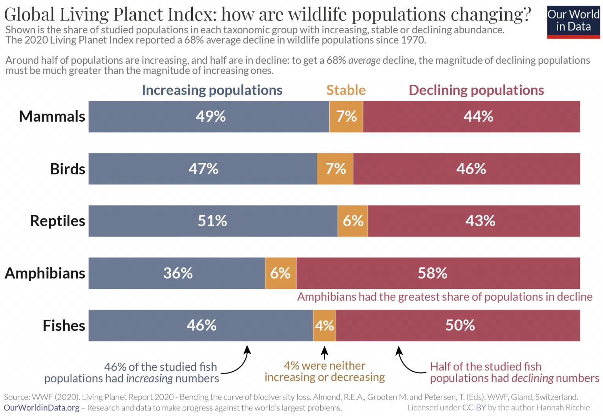
包括全球气候变暖、臭氧空洞、酸雨等。全球气候变暖的主要原因是大量燃烧矿物燃料排放二氧化碳以及森林破坏
可持续发展
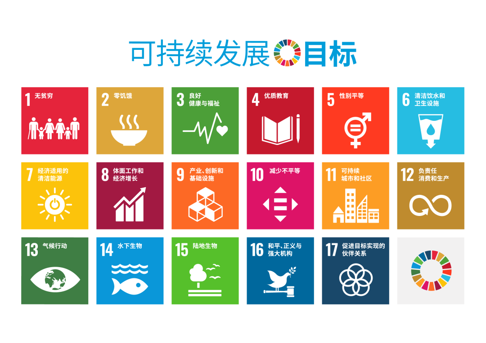
可持续发展包括经济、生态和社会三个方面的可持续发展，旨在既满足当代人的需求，又不对后代人满足其自身需求能力构成危害
垃圾分类
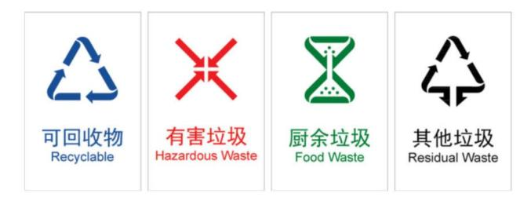
垃圾分类是环保生活的重要组成部分，通过将垃圾分为可回收物、有害垃圾、厨余垃圾和其他垃圾，可以有效减少垃圾填埋和焚烧量，提高资源回收利用率。
节能减排
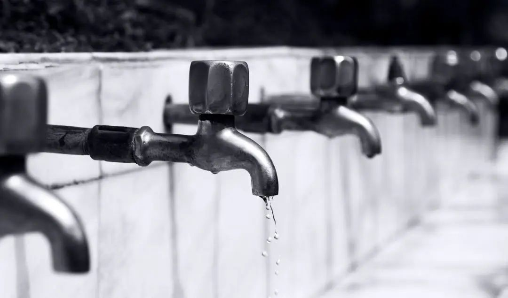
在日常生活中，可以通过节约用电、使用节能电器、减少空调使用等方式降低能源消耗
绿色出行
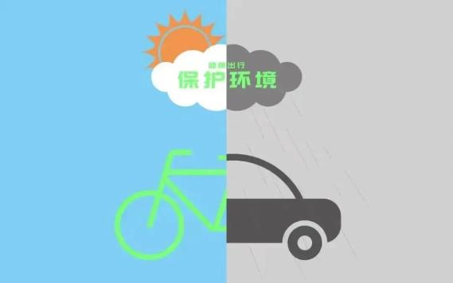
选择步行、骑自行车或乘坐公共交通工具，减少私家车使用，有助于降低碳排放
生态系统
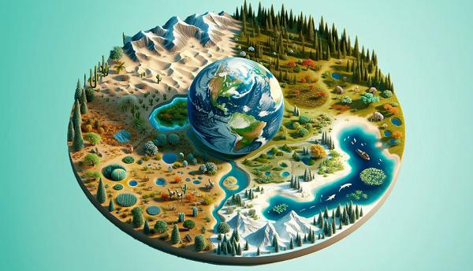
生态系统由生物成分（生物群落和种群）和非生物成分（非活性的环境物质和能量）组成，包括陆地生态系统和水生生态系统，
湿地、森林、海洋被誉为地球三大生态环境系统，被誉为“地球之肾”、“天然水库”、“物种宝库”。
具体也可以分为八大生态系统：森林生态系统、草原生态系统、海洋生态系统、淡水生态系统（分为湖泊生态系统、池塘生态系统、河流生态系统等）、农田生态系统、冻原生态系统、湿地生态系统、城市生态系统。
地球最大的生态系统是生物圈；最为复杂的生态系统是热带雨林生态系统，人类主要生活在以城市和农田为主的人工生态系统中。
湿地保护
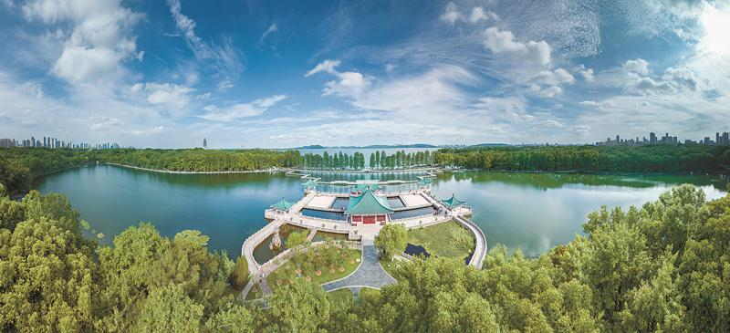
湿地被称为“地球之肾”，具有调节气候、蓄洪防洪、淤积造陆、降解污染等功能。保护湿地的措施包括禁止过度开垦、退耕还湿、退耕还湖等
海洋生态
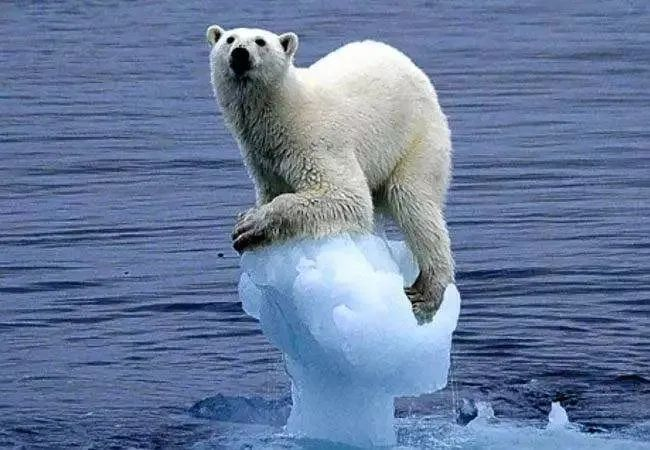
海洋酸化是由于海水溶解更多的大气二氧化碳而导致的海水pH降低的过程，对海洋生物和生态系统造成威胁
土壤次生盐碱化
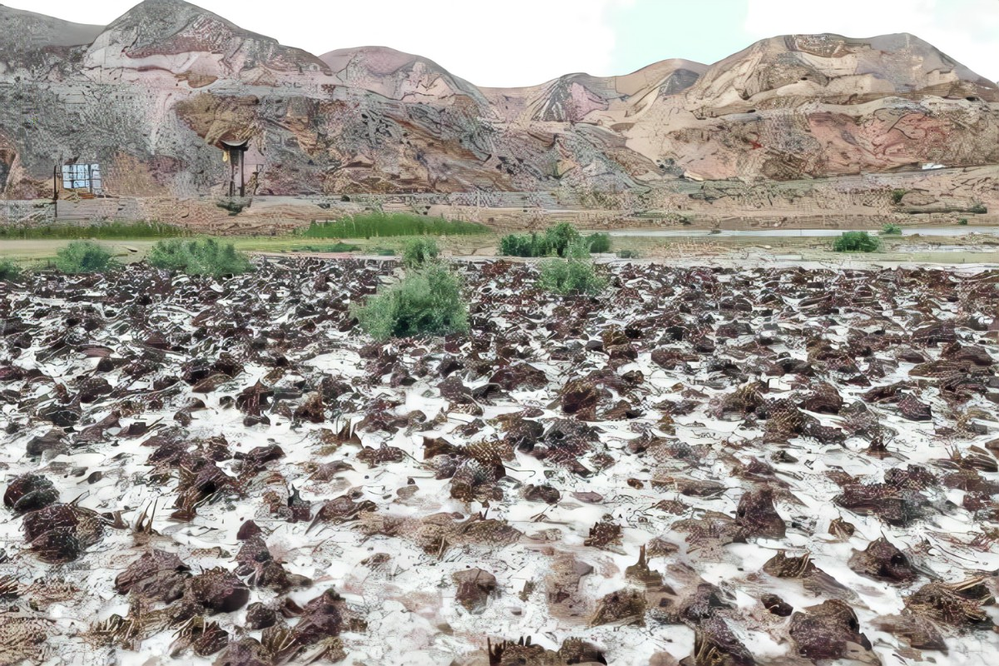
我国黄淮海平原、宁夏平原、河套平原等地易发生土壤次生盐碱化，其治理措施包括引淡淋盐、井排井灌、生物措施、农田覆盖等
赤潮现象
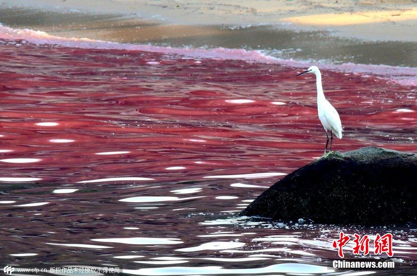
赤潮是由于水体富营养化导致藻类大量繁殖的现象，主要发生在珠江口、杭州湾、渤海等海域，其形成原因包括气温高、静水、静风以及沿岸地区大量排放污水
生物多样性保护
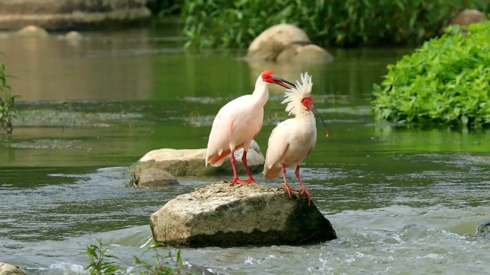
生物多样性是维持生态系统稳定的重要因素，保护生物多样性需要减少栖息地破坏、打击非法贸易、加强生态保护区建设等